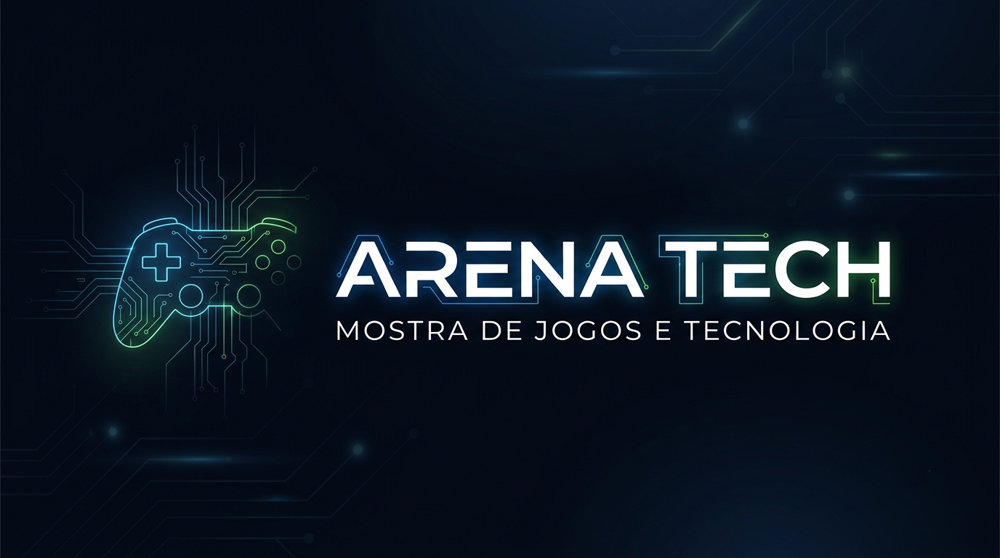
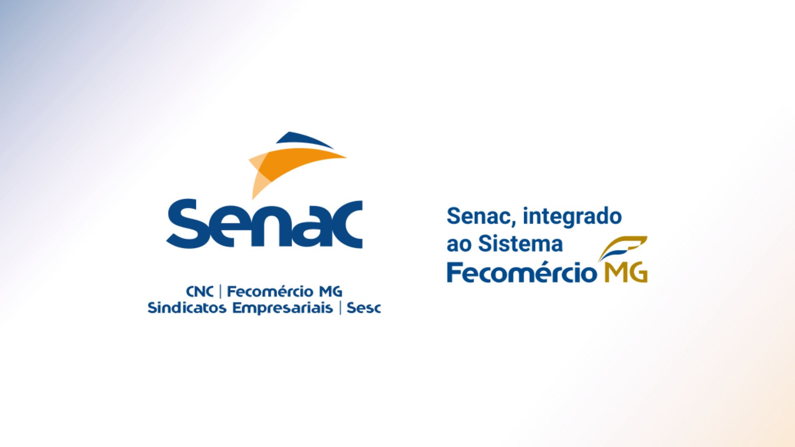
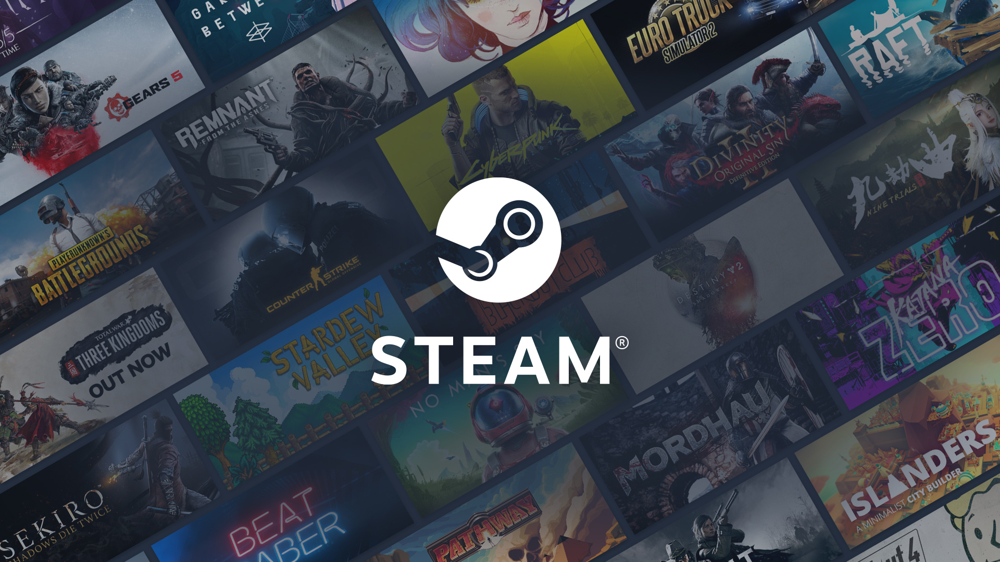
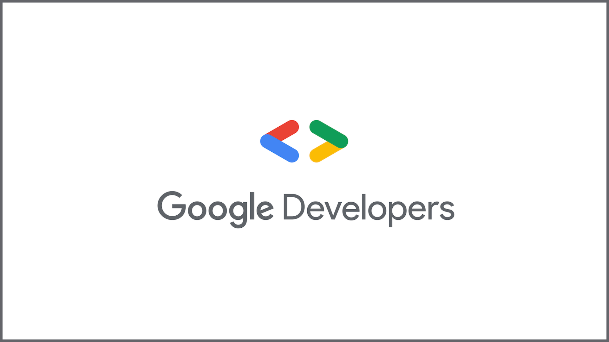

Mostra de Jogos e Tecnologia Arena Tech
Explore ideias que viram experiências. A Arena Tech reúne jogos, inovação e criatividade em uma mostra feita para quem gosta de tecnologia, desafios e novas possibilidades. Participe, conheça projetos incríveis e faça sua inscrição para entrar nessa arena.

Veja nossas atrações:
- Mostra de Jogos — Experimente jogos desenvolvidos por estudantes e conheça projetos criativos em diferentes estilos.
- Desafios Games — Participe de competições rápidas, disputas amigáveis e atividades interativas.
- Arena de Tecnologia — Veja de perto robótica, programação, inteligência artificial e outras soluções inovadoras.
- Palestras e Oficinas — Aprenda com convidados e alunos sobre desenvolvimento de jogos, design, tecnologia e carreira.
Programação do evento:
- 09h00 - Credenciamento e Abertura — Recepção dos participantes, retirada de credenciais e apresentação oficial da Arena Tech.
- 09h30 - Visitação à Mostra de Jogos — Explore os jogos criados pelos estudantes, teste as experiências e vote no seu projeto favorito.
- 11h00 - Palestra: Tecnologia que Transforma — Uma conversa sobre inovação, programação, criação de games e as oportunidades no universo digital.
- 13h00 - Oficinas Interativas — Participe de atividades práticas de programação, design, robótica e desenvolvimento de jogos..
- 15h00 - Desafios Games — Entre na arena para competições rápidas, missões tecnológicas e disputas entre equipes.
- 16h30 - Premiação e Encerramento — Reconhecimento dos destaques da mostra, divulgação dos vencedores e encerramento do evento.
Conheça nossos patrocinadores:

- Senac Uberlândia
- Steam
- Google Devlopers